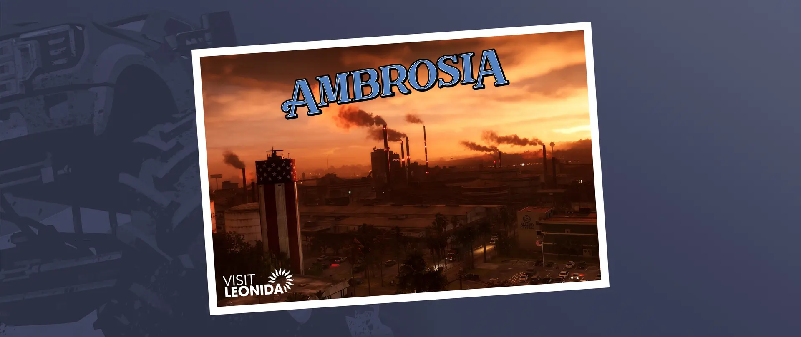

Os anos 80 já passaram, mas Vice City continua sendo a capital do sol e da diversão nos Estados Unidos.
No coração de Leonida, a indústria americana e os valores tradicionais ainda predominam — a qualquer custo.
País mais que selvagem. Espaço para respirar nos rincões mais ao norte do estado.